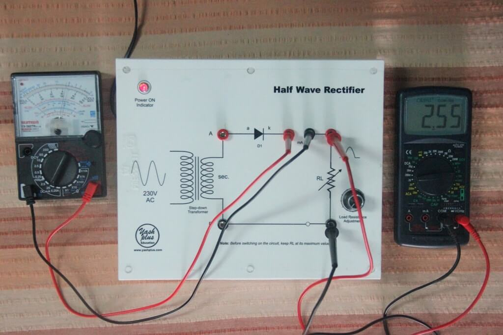
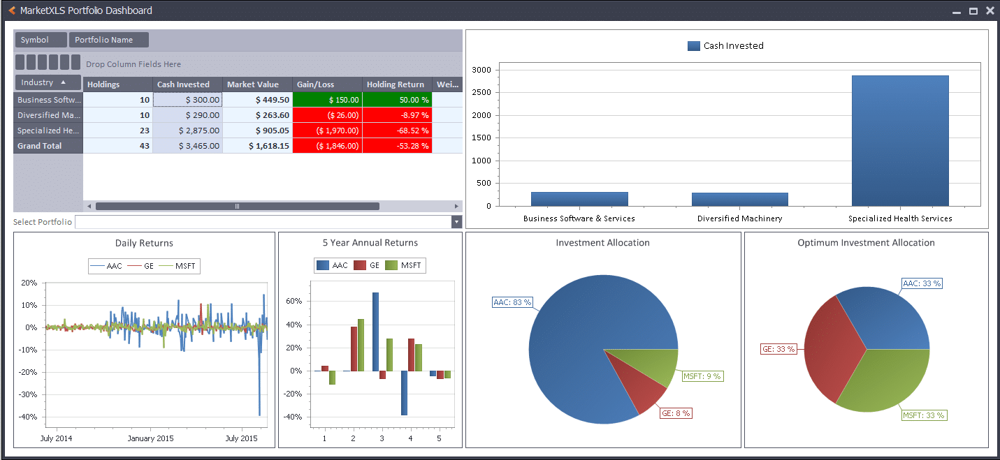

LATEST PROJECTS
Project 1: Click to Hide Details!
Half-wave Rectifier
Successfully designed, simulated and build a functional rectifier using MOSFETs. Utilized OrCAD PSpice, MapleSim and Oscilloscope to test functionality.
Project 2: Click to Hide Details!
Stock Portfolio Tracker
Developed a VBA based application using open database connectivity (ODBC) to monito real-time stock & fund changes. Implemented live charts to track personal portfolio movements and provide true performance on the go.
